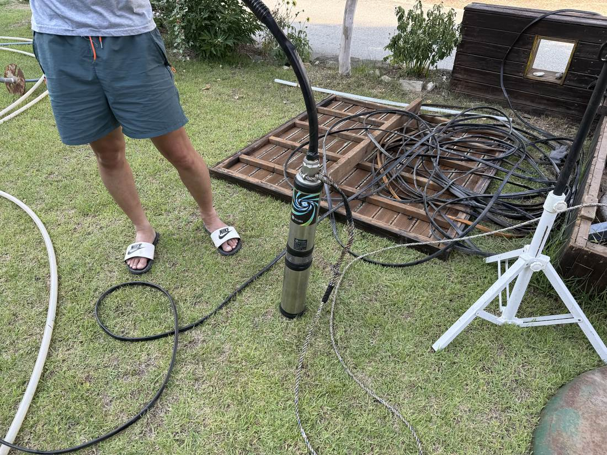
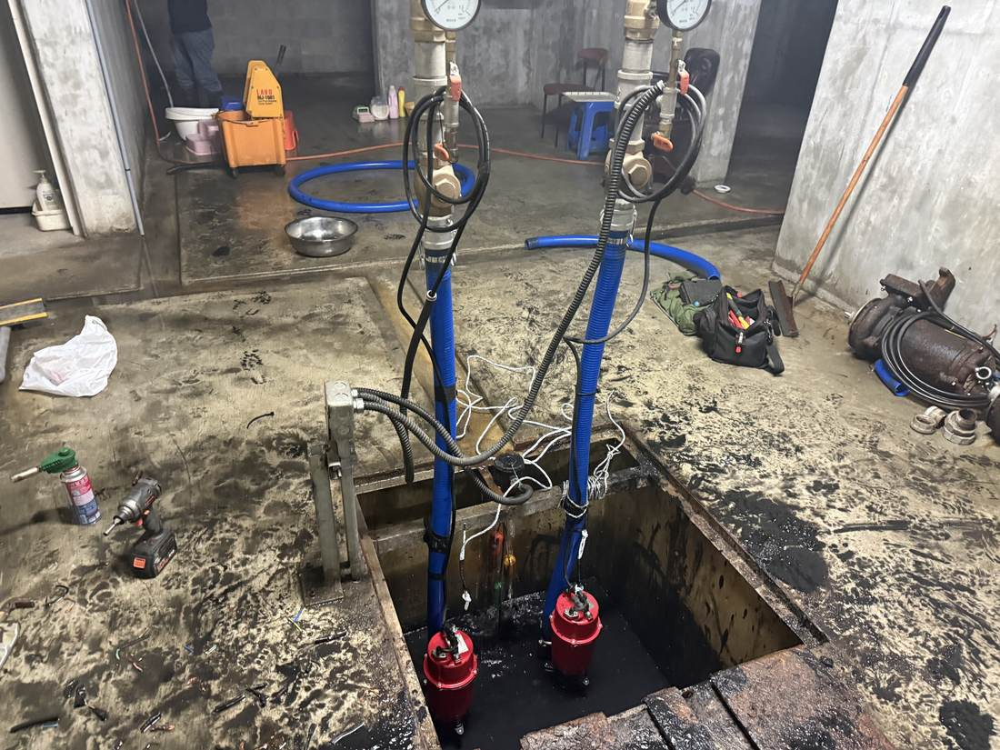
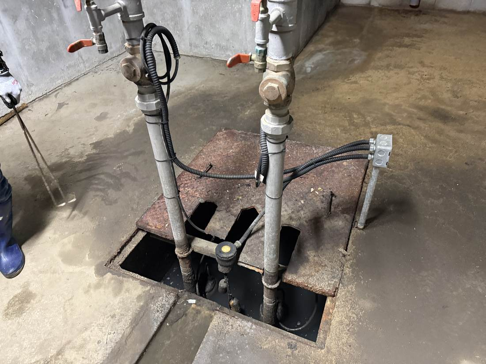
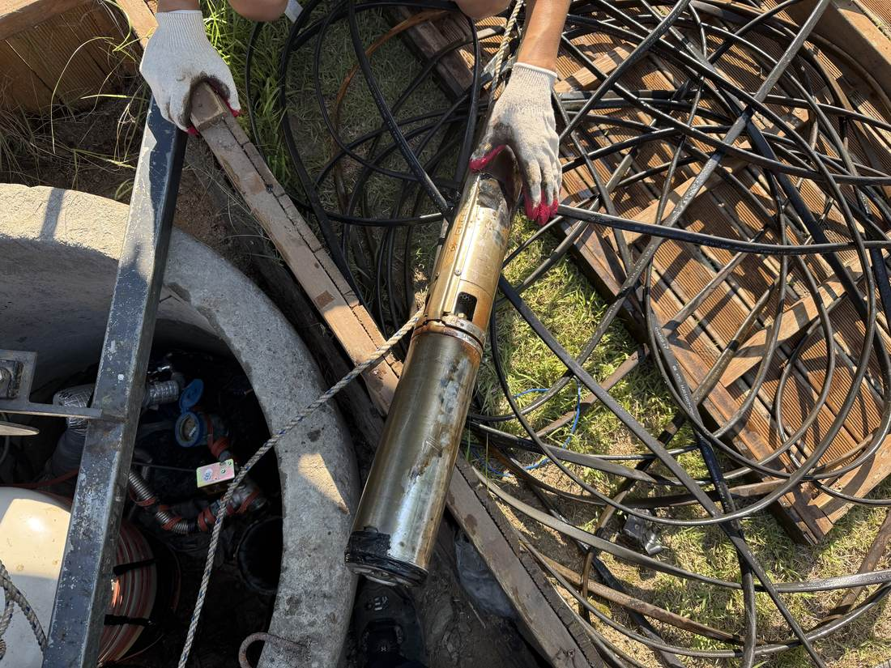
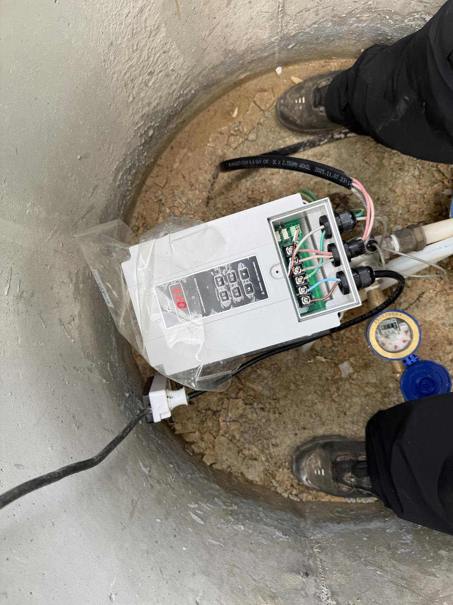

수중모터 인양 후 절연 측정, 신품 교체
관정에서 인양한 수중모터의 절연저항을 현장에서 측정해 소손을 확인하고, 용량에 맞는 신품으로 당일 교체했습니다.
다산·별내 신도시 아파트부터 진접·오남·화도의 전원주택, 수동·조안 외곽 농가·공장까지 남양주 전 지역을 커버합니다. 기술자가 직접 출동하며, 권역에 따라 남양주 인근 상주 기사와 협업해 도착 시간을 최대한 단축합니다.
가장 가까운 증상을 선택하면 예상 원인과 확인 방법을 바로 보여드립니다. 전화 주실 때 이 내용을 말씀해 주시면 상담이 훨씬 빨라집니다.
단순 부품 교체 영업이 아닙니다. 살릴 수 있는 모터는 살리고, 바꿔야 할 모터만 바꾸는 것을 원칙으로 합니다.
증상을 말씀해 주시면 자가진단 내용을 참고해 원인을 먼저 좁혀드립니다. 헛출장을 줄이기 위한 과정입니다.
절연저항·전류 측정으로 모터 상태를 확인하고, 예상 금액을 작업 전에 먼저 안내합니다.
수리로 해결되면 불필요한 교체를 권하지 않습니다. 교체가 필요하면 관정·용도에 맞는 용량을 선정합니다.
작업 완료 후 정상 작동을 직접 보여드리고, 필요 시 정기 점검 일정을 안내합니다.
남양주는 신도시 아파트와 상가가 많아 지하 피트 배수펌프 고장·교체 수요가 특히 많은 지역입니다. 지하수 계통과 함께 배수 계통까지 한 번에 해결합니다.


여름철 낙뢰·서지(surge)로 인버터나 제어반 기판이 손상되는 사고가 매년 발생합니다. 무작정 교체하기 전에 피해 원인을 먼저 진단하고, 보험으로 보상 가능한 경우 접수에 필요한 자료까지 안내해 드립니다.
※ 보험 가입 내용에 따라 보상 가능 여부가 다르며, 최종 접수·심사는 가입하신 보험사를 통해 진행됩니다.
다산·별내 신도시부터 화도·수동·조안 외곽까지 남양주 전 지역에 출동합니다. 권역에 따라 남양주 인근 상주 기술자와 협업해 도착 시간을 단축하며, 예상 소요시간은 접수 시 정직하게 안내합니다.
※ 구리·의정부·포천·하남 등 인접 지역도 출장 가능합니다. 애매하면 일단 전화 주세요.
지하수·배수펌프 현장 경력
남양주 전 지역 출장 원칙
작업 전 견적 사전 고지
아파트 27층 높이에 해당하는 심도까지 인양 장비를 갖추고 대응합니다. 남양주·양평 산간 관정에서도 동일한 장비로 작업합니다.
측정값과 사진이 남는 작업만 사례로 올립니다.

관정에서 인양한 수중모터의 절연저항을 현장에서 측정해 소손을 확인하고, 용량에 맞는 신품으로 당일 교체했습니다.

모터만 보지 않고 맨홀 내부 배관, 체크밸브, 전선 연결부까지 함께 확인해 재발 원인을 남기지 않습니다.

단자대 배선 상태와 수위센서 신호를 확인하고 운전 정상 여부까지 확인 후 마무리.
현장에서 갑자기 금액이 커지는 일이 없도록, 접수 단계에서 예상 범위를 안내합니다.
무료. 자가진단 내용을 참고해 출장이 필요한지, 자가 조치가 가능한지 먼저 판단해 드립니다.
권역별로 정해진 출장비를 접수 시 안내합니다. 수리를 진행하면 출장비는 수리비에 포함됩니다.
현장 진단 후 작업 전에 견적을 먼저 확정합니다. 동의 없이 진행하는 작업은 없습니다.
※ 심정 인양·교체는 관정 깊이와 펌프 용량에 따라 달라 전화 상담 시 예상 범위를 안내드립니다.
남양주 전 지역, 신도시부터 외곽까지 9년 경력 기술자가 직접 출동합니다.